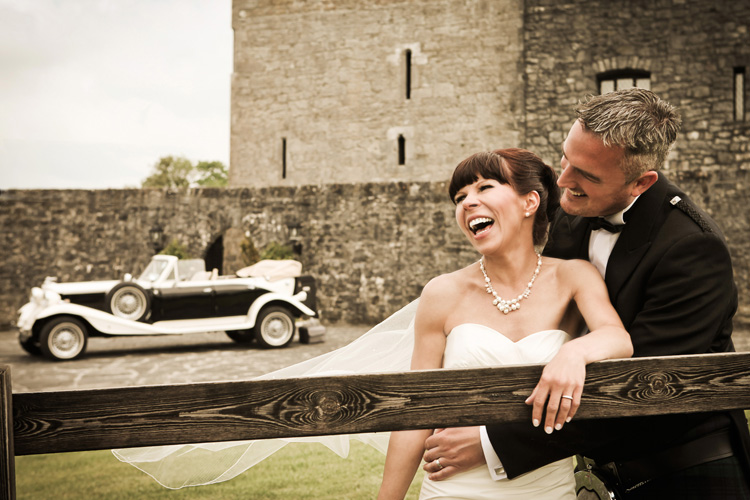

Who?
Hi, I'm Dee. I am a fresh, energetic professional photographer based out of Dublin, Ireland.
Here you will find samples of my work on weddings, family portraits, newborns, dance, event and nature from around Ireland and abroad. I love to capture life in all it's colours, it inspires me to get creative. Have a browse through the galleries here and pop over to my blog for my latest work. I really hope you enjoy them. Feel free to drop me a line via the contact page, join 'Dee Organ Photography' on facebook or give me a call on 086 2265615. Can't wait to meet you!